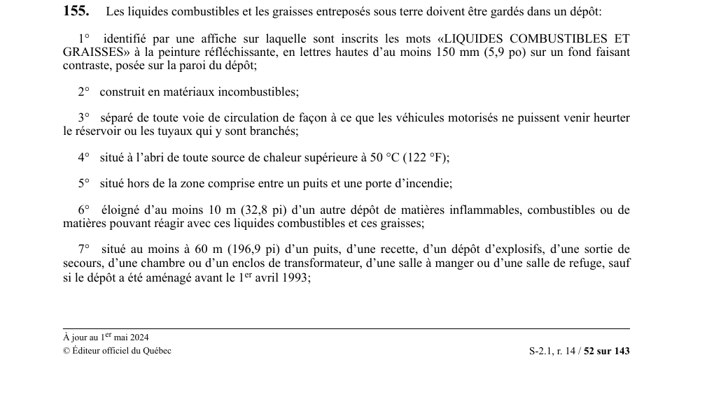

art-155-RSSM : dépôt souterrain liquides combustibles exigences
Tout liquide combustible ou graisse gardé sous terre doit l'être dans un dépôt qui réunit les conditions cumulatives 1° à 7°. Obligation de l'employeur.
- Identification : affiche « LIQUIDES COMBUSTIBLES ET GRAISSES » en peinture réfléchissante, lettres d'au moins 150 mm (5,9 po) sur fond contrastant, posée sur la paroi du dépôt.
- Construction en matériaux incombustibles et séparation des voies de circulation, pour qu'aucun véhicule motorisé ne heurte le réservoir ou ses tuyaux.
- Protection thermique : à l'abri de toute source de chaleur supérieure à 50 °C (122 °F).
- Emplacement interdit dans la zone comprise entre un puits et une porte d'incendie.
- Éloignement : au moins 10 m (32,8 pi) d'un autre dépôt de matières inflammables, combustibles ou réactives, et au moins 60 m (196,9 pi) d'un puits, d'une recette, d'un dépôt d'explosifs, d'une sortie de secours, d'un transformateur, d'une salle à manger ou d'une salle de refuge, sauf pour un dépôt aménagé avant le 1er avril 1993.
🌐 LegisQuébec · 📄 PDF officiel
Texte officiel
Les liquides combustibles et les graisses entreposés sous terre doivent être gardés dans un dépôt:
1° identifié par une affiche sur laquelle sont inscrits les mots «LIQUIDES COMBUSTIBLES ET GRAISSES» à la peinture réfléchissante, en lettres hautes d’au moins 150 mm (5,9 po) sur un fond faisant contraste, posée sur la paroi du dépôt;
2° construit en matériaux incombustibles;
3° séparé de toute voie de circulation de façon à ce que les véhicules motorisés ne puissent venir heurter le réservoir ou les tuyaux qui y sont branchés;
4° situé à l’abri de toute source de chaleur supérieure à 50 °C (122 °F);
5° situé hors de la zone comprise entre un puits et une porte d’incendie;
6° éloigné d’au moins 10 m (32,8 pi) d’un autre dépôt de matières inflammables, combustibles ou de matières pouvant réagir avec ces liquides combustibles et ces graisses;
7° situé au moins à 60 m (196,9 pi) d’un puits, d’une recette, d’un dépôt d’explosifs, d’une sortie de secours, d’une chambre ou d’un enclos de transformateur, d’une salle à manger ou d’une salle de refuge, sauf si le dépôt a été aménagé avant le 1 avril 1993;
8° muni d’une porte coupe-feu à fermeture automatique ayant une résistance au feu d’au moins une heure et demie ou d’un dispositif offrant une résistance équivalente;
9° aménagé de façon à ce que les liquides combustibles qui pourraient s’échapper d’un réservoir soient captés dans un bassin d’une capacité au moins égale à celle du plus grand réservoir dans le dépôt;
10° pourvu de bacs devant être utilisés lors d’un transvasement pour capter les liquides combustibles pouvant être déversés accidentellement;
11° muni, le cas échéant, d’un dispositif de contrôle du niveau de carburant diesel qui rend impossible l’acheminement de carburant provenant de la surface lorsque le réservoir est plein;
12° pourvu d’un plancher lisse, facile d’entretien et sans creux dans lesquels les liquides combustibles pourraient s’accumuler;
13° aéré conformément à la sous-section 4.4.2 de la norme Code des liquides inflammables et combustibles, NFPA 30-1996;
14° disposant d’une quantité minimale de 25 kg (55,1 livres) d’absorbant.
Le paragraphe 6 du premier alinéa ne s’applique pas à un dépôt de carburant diesel existant le 9 avril 2009.
Le présent article s’applique à des dépôts contenant 101 litres (22,2 gallons) et plus de liquides combustibles et de graisses, à l’exception du paragraphe 8 du premier alinéa qui ne s’applique qu’à des dépôts de 501 litres (110 gallons) et plus.
Texte de l’article 155 RSSM, extrait de la couche texte du PDF officiel (page 52), sans OCR ni retouche. La capture ci-dessous et le PDF font foi.
{kind=link}

Toucher l'image pour l'agrandir🔗 Voir art. 155 RSSM dans le PDF (page 52)
Version : texte officiel du RSSM (RLRQ c. S-2.1, r. 14), à jour au 1er mai 2024, Éditeur officiel du Québec
Voir aussi
art. 153 : interdiction propane sous terre · interdiction : il est interdit d'utiliser ou d'entreposer du propane sous terre.
art. 154 : distance entreposage combustibles de l'orifice · interdiction : il est interdit d'entreposer des matières combustibles ou inflammables à moins de 30 m (98,4 pi) d'un orifice à la surface d'une mine souterraine ou d'un bâtiment le recouvrant, sauf dans un réservoir enterré.
art. 156 : quantité maximale carburant entreposé · interdiction : la quantité d'huile et de graisse entreposée dans un dépôt situé sous terre ne doit pas dépasser les besoins de 7 jours ; la quantité de carburant diesel entreposé sous terre ne doit pas dépasser les besoins de 7 jours ni excéder 9 000 litres (1 980 gallons).
art. 157 : retour récipients huile fin quart · obligation : sous terre, les récipients d'huile et de graisse doivent être entreposés dans le dépôt au plus tard à la fin de chaque quart de travail, sauf pour les quantités d'huile et de graisse inférieures à 23 litres (5,1 gallons) utilisées pour lubrifier les outils.
⚖️ Loi habilitante : LSST
Pages qui pointent ici (5)
- art-153-RSSM : interdiction propane sous terre Recueil législatif
- art-154-RSSM : distance entreposage combustibles de l'orifice Recueil législatif
- art-156-RSSM : quantité maximale d'huile et de graisse sous terre Recueil législatif
- art-157-RSSM : retour récipients huile fin quart Recueil législatif
- RSSM : Soutènement (art. 131 à 160) Recueil législatif